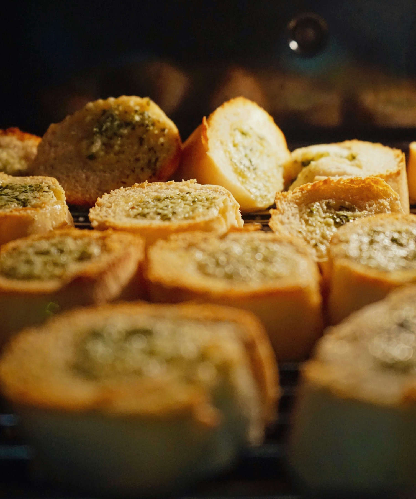

Classic Garlic Bread

Photo Credit to ihjaaz manarikk on Unsplash
Home
Description
Crispy, toasty, classic garlic bread.
Ingredients:
- French Bread
- Mozzarella Cheese
- Butter
- Garlic Powder
- Italian Seasoning
Directions:
- Preheat oven to 375 degrees.
- Slice bread into about 1 inch thick slices and place on pizza pan covered in foil.
- Butter each face-up side.
- Season with garlic powder to taste.
- Add as much or as little cheese as you please.
- Sprinkle with Italian seasoning.
- Bake in the oven for about 8 minutes or until cheese is browning and the bread is toasted.
- Take out of the oven and enjoy!
Recipe from love2sketch's mom